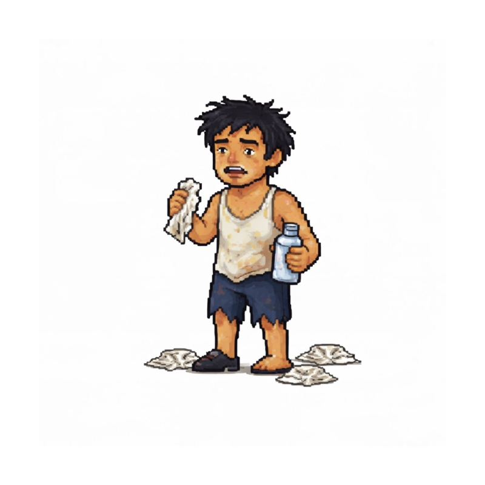

Coomer is a satire-driven meme coin inspired by the archetype of the endlessly scrolling, dopamine-chasing internet dweller.
In a world overloaded with content, headlines, conflict narratives, and algorithmic stimulation, attention has become the most traded asset. Markets move on emotion. Feeds move on impulse.
Coomer represents peak digital excess — the cycle of hype, regret, refresh, repeat. A character shaped by the timeline itself.
The scroll never sleeps.
CA: HkjPwyuqnrTZFSQLsRoPArLm518yo1gEggpeBHBhpump
Headline Fatigue & Meme Escapism
As global events dominate discourse, online communities increasingly
retreat into humor and exaggerated personas. The Coomer character
reflects that overstimulated digital state.
Attention Economy Spiral
Studies suggest constant content consumption reshapes online behavior.
In crypto, the same cycle appears: pump, panic, distraction, repeat.
Summary: Coomer is not about productivity or discipline. It is about self-awareness in the age of infinite scroll. A meme reflecting the overstimulated market participant.
Coomer is a meme token created for satire and entertainment. Cryptocurrency markets are volatile and speculative. Nothing on this page is financial advice.